ALL <- read.csv(file = here("Processed data frames/ALLtogether.csv"), header=TRUE)
ALL_EXTRA <- read.csv(file = here("Processed data frames/ALLtogether_EXTRA.csv"), header=TRUE)BE_Biliometrics2023
Blue Economy Bibliometrics
The following code can be used to run the bibliometric and metadata analysis used for the article: Navigating the Changing Tides: Exploring Shifting Research Trends in the Blue Economy
The article aimed to shed light on the prevailing perceptions of this terminology among the general public and scientific community by examining the industries driving research in this field and any associated knowledge gaps and potential biases that may have influenced these perception patterns, by unveiling the evolution of the concept through the growing body of published literature and identifying potential factors contributing to its criticisms.
Part 1. Setup the R environment
You might need to install some of the libraries.
Citations for the libraries that were used the most can be found in the article’s references.
Part 2. Call in the data
This part shows the code used to tidy up the raw datasets exported from Scopus and Rayyan, and calls on the final, tidy datasets.
Section 2.1 and 2.2 can be skipped and the code will still work (since we created new csv files with the tidy sets in part 2.3). That said, if you run part 2.1 and 2.2, it is not necessary to run part 2.3.
2.1 Tidying up
Because we had a long list of articles, we had to download them in blocks. We converted them to bibliometric dataframes to then merge together. Keep in mind, we created a new dataframe that contains all to avoid needing to run this part. You can find it in section 2.2. That said, you can skip this first block.
Similarly, the Rayyan dataset had a lot of tidying up to do, so I will share the code here, but this step can be skipped when calling upon the tidy dataset in part 2.2.
An extra step here is extracting the altimetrics data from the datasets, which we added in this section so that you don’t have to process it (again we saved the final dataframe and can be called upon in section 2.2). Note you need internet to get this information.
2.2 Joining the datasets
2.3 Calling the tidy datasets
If you didn’t run section 2.1, we start by calling the bibliometrics merged dataframe, and the processed results from the Rayyan screening (we call them separetely cause we will use them separately for most analyses since the joint sets are restricted to the data -e.i. altimetrics, DOIs found)
You can also call the full datasets (but we won’t use them)
Part 3. General Bibliometrics
This first part will just get some general data that we are interested in using the #bibliometrics library, but then we will merge with the Rayyan set for further analyses
# Preliminary descriptive analyses
bibresults <- biblioAnalysis(bib, sep = ";")
summary(object = bibresults, k = 10, pause = TRUE) #display a series of summary tables
MAIN INFORMATION ABOUT DATA
Timespan 2018 : 2023
Sources (Journals, Books, etc) 305
Documents 703
Annual Growth Rate % 124.9
Document Average Age 1.61
Average citations per doc 6.297
Average citations per year per doc 1.969
References 1
DOCUMENT TYPES
article 416
book 16
book chapter 113
conference paper 72
data paper 1
editorial 8
erratum 1
note 13
review 62
short survey 1
DOCUMENT CONTENTS
Keywords Plus (ID) 2507
Author's Keywords (DE) 1961
AUTHORS
Authors 2759
Author Appearances 3310
Authors of single-authored docs 128
AUTHORS COLLABORATION
Single-authored docs 143
Documents per Author 0.255
Co-Authors per Doc 4.71
International co-authorships % 35.42
Hit <Return> to see next table:
Annual Scientific Production
Year Articles
2018 2
2019 33
2020 123
2021 194
2022 236
2023 115
Annual Percentage Growth Rate 124.87
Hit <Return> to see next table:
Most Productive Authors
Authors Articles Authors Articles Fractionalized
1 VOYER M 13 CISNEROS-MONTEMAYOR AM 3.63
2 CISNEROS-MONTEMAYOR AM 12 GERMOND-DURET C 2.74
3 BENNETT NJ 7 WINDER GM 2.50
4 FABINYI M 7 GUERREIRO J 2.35
5 FAILLER P 7 VOYER M 2.34
6 FULTON EA 7 QI X 2.25
7 GERMOND-DURET C 7 SARWAR S 2.25
8 BENZAKEN D 6 CARVER R 2.00
9 HEIDKAMP CP 6 CHRISTIANSEN J 2.00
10 SUMAILA UR 6 CLARK TP 2.00
Hit <Return> to see next table:
Top manuscripts per citations
Paper DOI TC TCperYear NTC
1 JOUFFRAY JB, 2020, ONE EARTH 10.1016/j.oneear.2019.12.016 220 55.0 15.74
2 BENNETT NJ, 2019, NATURE SUSTAIN 10.1038/s41893-019-0404-1 188 37.6 9.06
3 LEE KH, 2020, ENVIRON INT 10.1016/j.envint.2020.105528 108 27.0 7.73
4 BENNETT NJ, 2021, MAR POLICY 10.1016/j.marpol.2020.104387 105 35.0 15.72
5 BENNETT NJ, 2021, MAR POLICY 10.1016/j.marpol.2020.104387 105 35.0 15.72
6 CISNEROS-MONTEMAYOR AM, 2021, NATURE 10.1038/s41586-021-03327-3 75 25.0 11.23
7 WINTHER JG, 2020, NAT ECOL EVOL 10.1038/s41559-020-1259-6 66 16.5 4.72
8 CISNEROS-MONTEMAYOR AM, 2019, MAR POLICY 10.1016/j.marpol.2019.103702 58 11.6 2.79
9 GARLAND M, 2019, GEOGR COMPASS 10.1111/gec3.12445 57 11.4 2.75
10 NASH KL, 2020, ONE EARTH 10.1016/j.oneear.2020.01.008 53 13.2 3.79
Hit <Return> to see next table:
Corresponding Author's Countries
Country Articles Freq SCP MCP MCP_Ratio
1 UNITED KINGDOM 48 0.0970 26 22 0.458
2 USA 45 0.0909 28 17 0.378
3 AUSTRALIA 44 0.0889 24 20 0.455
4 INDIA 36 0.0727 29 7 0.194
5 CHINA 31 0.0626 25 6 0.194
6 SPAIN 29 0.0586 15 14 0.483
7 CANADA 28 0.0566 7 21 0.750
8 ITALY 21 0.0424 14 7 0.333
9 INDONESIA 18 0.0364 16 2 0.111
10 PORTUGAL 12 0.0242 9 3 0.250
SCP: Single Country Publications
MCP: Multiple Country Publications
Hit <Return> to see next table:
Total Citations per Country
Country Total Citations Average Article Citations
1 CANADA 671 23.14
2 UNITED KINGDOM 530 10.82
3 AUSTRALIA 424 9.64
4 SWEDEN 312 26.00
5 USA 224 4.98
6 SPAIN 163 5.62
7 INDIA 138 3.83
8 KOREA 115 57.50
9 CHINA 114 3.56
10 NETHERLANDS 96 24.00
Hit <Return> to see next table:
Most Relevant Sources
Sources Articles
1 MARINE POLICY 57
2 FRONTIERS IN MARINE SCIENCE 40
3 SUSTAINABILITY (SWITZERLAND) 32
4 PREPARING A WORKFORCE FOR THE NEW BLUE ECONOMY: PEOPLE PRODUCTS AND POLICIES 29
5 OCEAN AND COASTAL MANAGEMENT 19
6 THE BLUE ECONOMY: AN ASIAN PERSPECTIVE 13
7 BLUE ECONOMY: PEOPLE AND REGIONS IN TRANSITIONS 11
8 IOP CONFERENCE SERIES: EARTH AND ENVIRONMENTAL SCIENCE 10
9 MARINE TECHNOLOGY SOCIETY JOURNAL 10
10 ONE EARTH 10
Hit <Return> to see next table:
Most Relevant Keywords
Author Keywords (DE) Articles Keywords-Plus (ID) Articles
1 BLUE ECONOMY 316 SUSTAINABLE DEVELOPMENT 111
2 SUSTAINABILITY 46 BLUE ECONOMIES 81
3 SUSTAINABLE DEVELOPMENT 41 SUSTAINABILITY 65
4 BLUE GROWTH 39 MARINE ENVIRONMENT 63
5 AQUACULTURE 38 CLIMATE CHANGE 52
6 CLIMATE CHANGE 31 ECOSYSTEM 40
7 FISHERIES 22 GOVERNANCE APPROACH 39
8 OCEAN GOVERNANCE 22 OCEANOGRAPHY 37
9 OCEAN ECONOMY 17 BIODIVERSITY 36
10 RENEWABLE ENERGY 17 ECONOMIC GROWTH 34plot(bibresults, k = 10, pause=TRUE) #takes top 10 values from each plottable tableHit <Return> to see next plot: 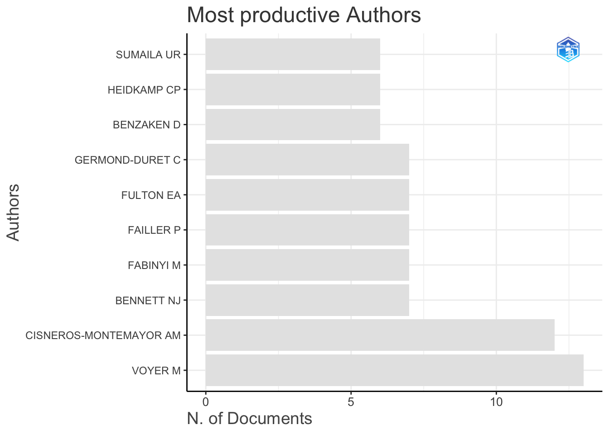
Hit <Return> to see next plot: 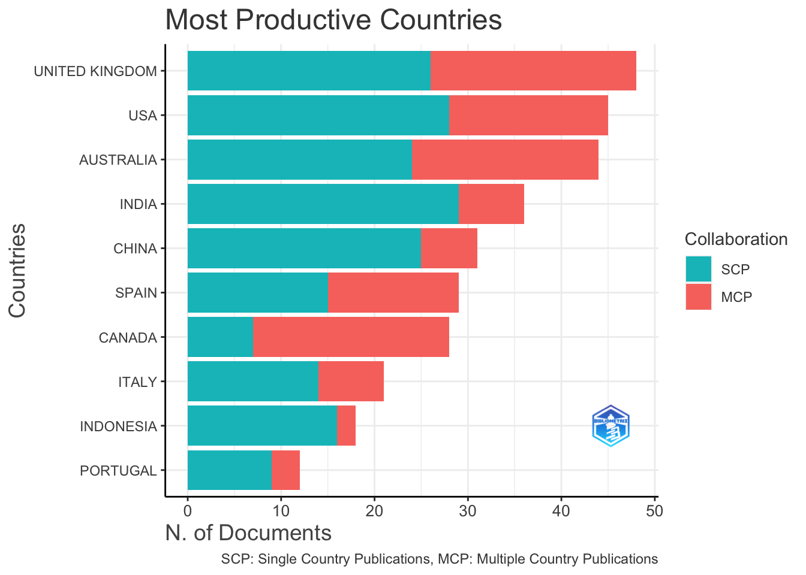
Hit <Return> to see next plot: 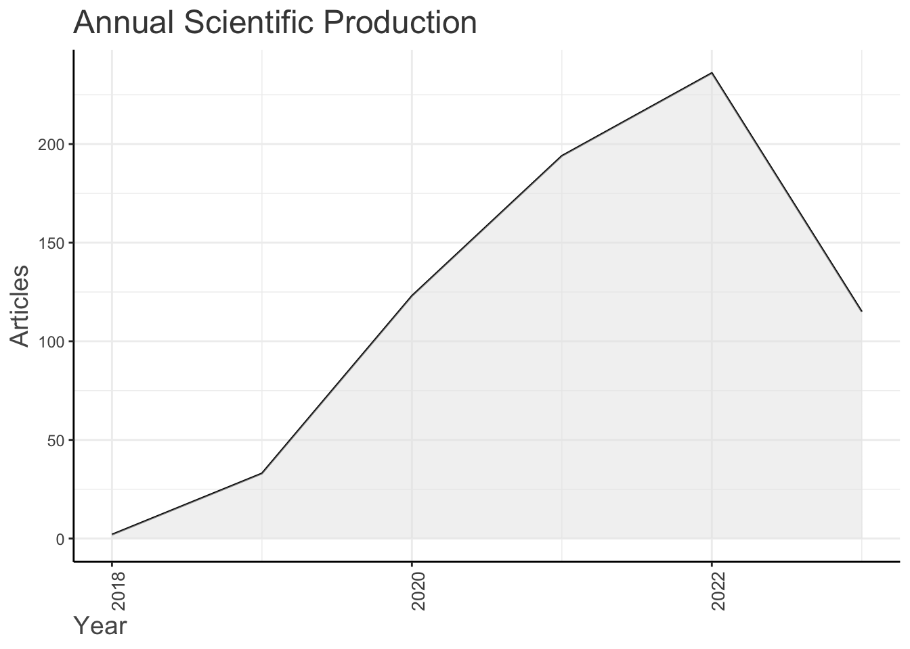
Hit <Return> to see next plot: Warning: Removed 1 rows containing non-finite values (`stat_align()`).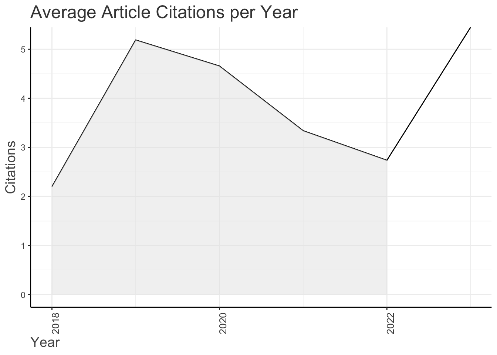
Hit <Return> to see next plot: 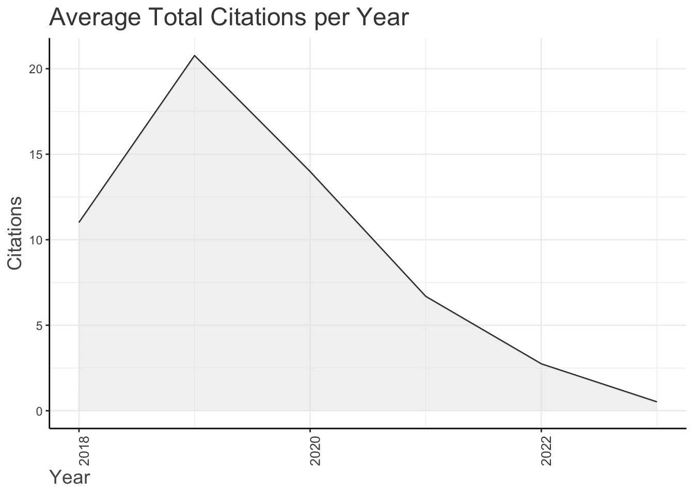
#to save plots into a pdf:
#pdf(file = "Plots/bib_descriptive_plots.pdf", height = 8, width = 8, pointsize=10) #
#plot(bibresults, k = 20, pause=FALSE) #this takes top 20 values from each plottable table
#dev.off()Part 4. General Altimetrics
The most relevant results from the altimetrics analyses using #raltimetrics library
First block will analyze data and the second generates plots for better visualization
#max(as.numeric(Altmetrics$score)) #highest total altmetric score (734.55)
#mean(as.numeric(Altmetrics$score)) #average total altmetric score (22.28)
##Policies
#table(Altmetrics$cited_by_policies_count, useNA = "always") #up to 4 articles cited once in policies
##table of articles with policies citations
Altmetrics %>% filter(as.numeric(cited_by_policies_count) > 0) %>% select(title, journal, authors1, year, doi, cited_by_policies_count) %>% arrange(desc(cited_by_policies_count)) %>% DT::datatable(rownames = FALSE, width = "100%", options = list(dom = 't', scrollY = '800px', pageLength = 20), caption = "Table of Altmetrics for articles cited by policies") ##Twitter (some high numbers here)
#table(Altmetrics$cited_by_tweeters_count, useNA = "always") #up to 461 mentions per article
#sum(table(Altmetrics$cited_by_tweeters_count)) # 325 articles mentioned at least once on Tweeter
#sum(Altmetrics$cited_by_tweeters_count, na.rm = TRUE) #6067 total numbers of mentions across all articles
##table of articles with cited_by_tweeters_count >50
Altmetrics %>% filter(as.numeric(cited_by_tweeters_count) > 50) %>% select(title, journal, authors1, year, doi, cited_by_tweeters_count) %>% arrange(desc(cited_by_tweeters_count)) %>% DT::datatable(rownames = FALSE, width = "100%", options = list(dom = 't', scrollY = '800px', pageLength = 20), caption = "Table of Altmetrics for articles with Tweeter counts > 50") ##Facebook
#table(Altmetrics$cited_by_fbwalls_count, useNA = "always") #up to 4 mentions per article
#sum(table(Altmetrics$cited_by_fbwalls_count)) #32 articles mentioned at least once
#sum(Altmetrics$cited_by_fbwalls_count, na.rm = TRUE) #44 total numbers of mentions
##table of articles with cited_by_fbwalls_count >=1
Altmetrics %>% filter(as.numeric(cited_by_fbwalls_count) >= 1) %>% select(title, journal, authors1, year, doi, cited_by_fbwalls_count) %>% arrange(desc(cited_by_fbwalls_count)) %>% DT::datatable(rownames = FALSE, width = "100%", options = list(dom = 't', scrollY = '800px', pageLength = 20), caption = "Table of Altmetrics for articles with Facebook counts > 10") ##Number of blogs that have mentioned the publication
#table(Altmetrics$cited_by_feeds_count, useNA = "always") # up to 5 mentions
#sum(table(Altmetrics$cited_by_feeds_count)) #42 mentioned at least once
#sum(Altmetrics$cited_by_feeds_count, na.rm = TRUE) #58 total numbers of mentions
##table of articles with cited_by_feeds_count >=1
Altmetrics %>% filter(as.numeric(cited_by_feeds_count) >= 1) %>% select(title, journal, authors1, year, doi, cited_by_feeds_count) %>% arrange(desc(cited_by_feeds_count)) %>% DT::datatable(rownames = FALSE, width = "100%", options = list(dom = 't', scrollY = '800px', pageLength = 20), caption = "Table of Altmetrics for articles with blog feeds counts > 10") ##News sources that have mentioned the publication
#table(Altmetrics$cited_by_msm_count, useNA = "always") #up to 90
#sum(table(Altmetrics$cited_by_msm_count)) #49 mentioned at least once
#sum(Altmetrics$cited_by_msm_count, na.rm = TRUE) #377 total numbers of mentions
##table of news with cited_by_msm_count >=1
Altmetrics %>% filter(as.numeric(cited_by_msm_count) >= 1) %>% select(title, journal, authors1, year, doi, cited_by_msm_count) %>% arrange(desc(cited_by_msm_count)) %>% DT::datatable(rownames = FALSE, width = "100%", options = list(dom = 't', scrollY = '800px', pageLength = 20), caption = "Table of Altmetrics for articles with news sources counts > 10") ##Wikipedia
#table(Altmetrics$cited_by_wikipedia_count, useNA = "always") #up to 2
#sum(table(Altmetrics$cited_by_wikipedia_count)) #7 cited at least once
#sum(Altmetrics$cited_by_wikipedia_count, na.rm = TRUE) #9 total numbers of mentions
##table of articles with cited_by_wikipedia_count >=1
Altmetrics %>% filter(as.numeric(cited_by_wikipedia_count) >= 1) %>% select(title, journal, authors1, year, doi, cited_by_wikipedia_count) %>% arrange(desc(cited_by_wikipedia_count)) %>% DT::datatable(rownames = FALSE, width = "100%", options = list(dom = 't', scrollY = '800px', pageLength = 20), caption = "Table of Altmetrics for articles with Wikipedia counts > 10") ##The sum of all "cited_by" entries (profiles per data source)
#table(Altmetrics$cited_by_accounts_count, useNA = "always") #across all above+
##table of articles with cited_by_accounts_count >10
Altmetrics %>% filter(as.numeric(cited_by_accounts_count) > 10) %>% select(title, journal, authors1, year, doi, cited_by_accounts_count) %>% arrange(desc(cited_by_accounts_count)) %>% DT::datatable(rownames = FALSE, width = "100%", options = list(dom = 't', scrollY = '800px', pageLength = 20), caption = "Table of Altmetrics for articles with all mentions counts > 10")#A combined table
# Filter and select columns for each table
table_policies <- Altmetrics %>%
filter(as.numeric(cited_by_policies_count) > 0) %>%
select(doi, title, journal, authors1, year, cited_by_policies_count) %>%
arrange(desc(cited_by_policies_count)) %>%
rename(Policies = cited_by_policies_count)
table_twitter <- Altmetrics %>%
filter(as.numeric(cited_by_tweeters_count) > 50) %>%
select(doi, title, journal, authors1, year, cited_by_tweeters_count) %>%
arrange(desc(cited_by_tweeters_count)) %>%
rename(Twitter = cited_by_tweeters_count)
table_facebook <- Altmetrics %>%
filter(as.numeric(cited_by_fbwalls_count) >= 1) %>%
select(doi, title, journal, authors1, year, cited_by_fbwalls_count) %>%
arrange(desc(cited_by_fbwalls_count)) %>%
rename(Facebook = cited_by_fbwalls_count)
table_blogs <- Altmetrics %>%
filter(as.numeric(cited_by_feeds_count) >= 1) %>%
select(doi, title, journal, authors1, year, cited_by_feeds_count) %>%
arrange(desc(cited_by_feeds_count)) %>%
rename(Blogs = cited_by_feeds_count)
table_news <- Altmetrics %>%
filter(as.numeric(cited_by_msm_count) >= 1) %>%
select(doi, title, journal, authors1, year, cited_by_msm_count) %>%
arrange(desc(cited_by_msm_count)) %>%
rename(News = cited_by_msm_count)
table_wikipedia <- Altmetrics %>%
filter(as.numeric(cited_by_wikipedia_count) >= 1) %>%
select(doi, title, journal, authors1, year, cited_by_wikipedia_count) %>%
arrange(desc(cited_by_wikipedia_count)) %>%
rename(Wikipedia = cited_by_wikipedia_count)
# Combine all tables into a single table
combined_table <- bind_rows(
"Policies" = table_policies,
"Twitter" = table_twitter,
"Facebook" = table_facebook,
"Blogs" = table_blogs,
"News sources" = table_news,
"Wikipedia" = table_wikipedia
)
# Merge the tables by doi and add new rows if doi doesn't match
merged_table <- combined_table %>%
group_by(doi) %>%
summarise(title = first(title),
journal = first(journal),
authors1 = first(authors1),
year = first(year),
Policies = sum(Policies),
Twitter = sum(Twitter),
Facebook = sum(Facebook),
Blogs = sum(Blogs),
News = sum(News),
Wikipedia = sum(Wikipedia)) %>%
ungroup()
# Display the merged table using DT::datatable
Altimetrics.Table <- DT::datatable(merged_table, rownames = FALSE, width = "100%",
options = list(dom = 't', scrollY = '800px', pageLength = 20),
caption = "Merged Table of Altmetrics for Different Categories")
Altimetrics.Table# Save the file
#write.csv(merged_table, file = here("Plots/AltimetricTable.csv"))Plots:
pos <- position_jitter(width = 0.1, height = 0.1, seed = 1) #used below to add jitter
#Altmetric scores across article publication years:
Altmetrics %>%
filter(!is.na(score)) %>% #without articles that have no scores
filter(!is.na(year)) %>% #without articles that have no year
ggplot(aes(x = year, y = score)) +
geom_point(color = "black", alpha = 0.25, position = pos) +
xlim(2016.5, 2019.5) +
theme_minimal() +
ylab("total Altmetric score") +
xlab("year")Warning: Removed 313 rows containing missing values (`geom_point()`).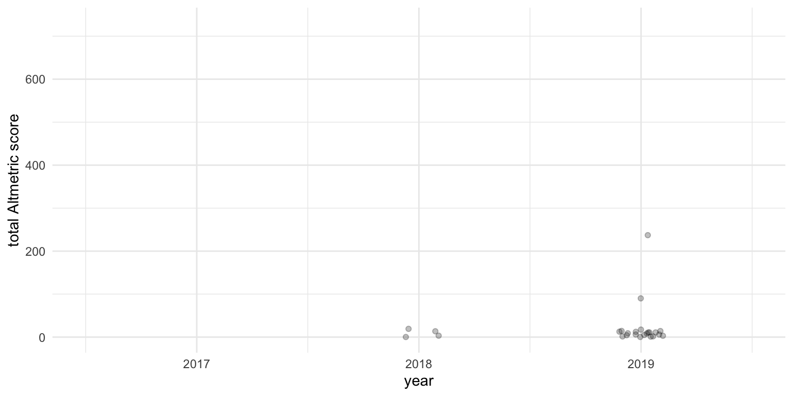
#Altmetric journal context percentile across years as a scatterplot
Altmetrics %>%
filter(!is.na(year)) %>% #without articles that have no year
ggplot(aes(x = year, y = as.numeric(context.journal.pct))) +
geom_point(alpha = 0.2, position = pos, color = "black") +
xlim(2016.5, 2019.5) +
theme_minimal() +
ylab("percentile within journal context") +
xlab("year")Warning: Removed 315 rows containing missing values (`geom_point()`).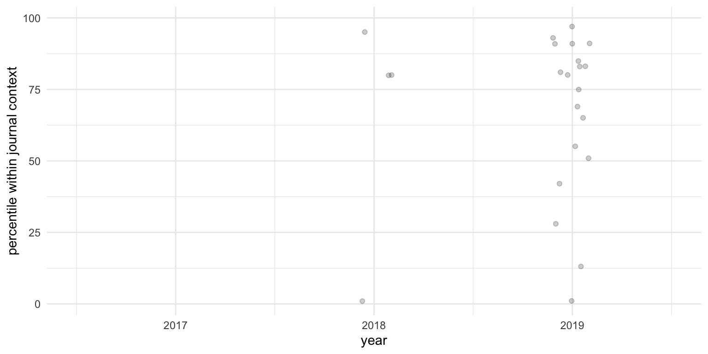
#Altimetric total counts per type of citation
# Convert the 'year' column to numeric in case it's a factor or character
merged_table$year <- as.numeric(merged_table$year)
#replace NA for 0
merged_table <- merged_table %>%
mutate_at(vars(Policies, Twitter, Facebook, Blogs, News, Wikipedia), replace_na, replace = 0)
# Sum the counts per category for each year
totalALT_per_year <- merged_table %>%
group_by(year) %>%
summarise(
Policies = sum(Policies),
Twitter = sum(Twitter),
Facebook = sum(Facebook),
Blogs = sum(Blogs),
News = sum(News),
Wikipedia = sum(Wikipedia)
) %>%
ungroup()
#Scatter Plot of totals
melted_totals <- melt(totalALT_per_year, id.vars = "year", measure.vars = c("Policies", "Twitter", "Facebook", "Blogs", "News", "Wikipedia"))
# Plot the scatter plot with lines connecting the data points
ggplot(data = melted_totals, aes(x = year, y = value, color = variable, group = variable)) +
geom_point() +
geom_line() + # Add this line to connect the dots
labs(x = "Year", y = "Total Inputs", title = "Total Altmetrics Inputs per Year") +
theme_minimal()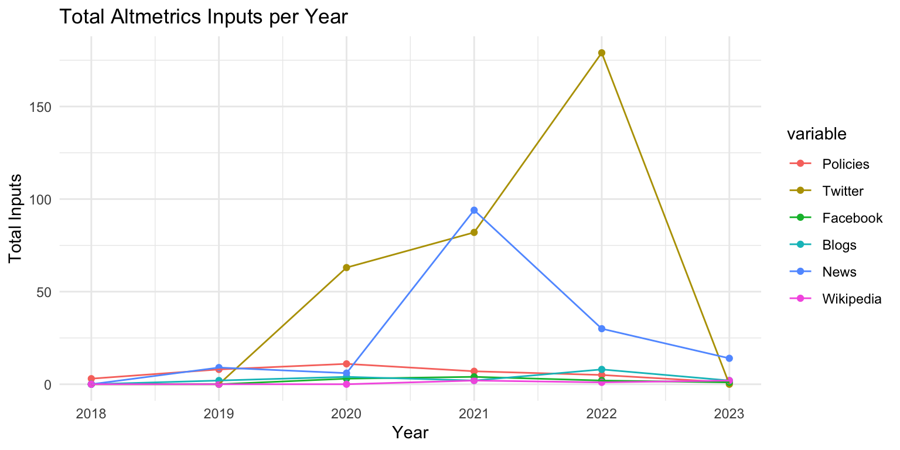
#Top ten most influential journals by altimetric score
# Calculate the influence of each journal by summing inputs across all altmetrics scores
influence_per_journalscore <- Altmetrics %>%
group_by(journal) %>%
summarise(total_influenceSC = sum(score)) %>%
ungroup() %>%
arrange(desc(total_influenceSC)) # Sort in descending order of influence
# Select the top 10 most influential journals
top_10_journalsSC <- head(influence_per_journalscore, 10)
# Plot the bar chart for the top 10 most influential journals
ggplot(top_10_journalsSC, aes(x = reorder(journal, total_influenceSC), y = total_influenceSC)) +
geom_bar(stat = "identity", fill = "steelblue") +
labs(x = "Journal", y = "Total Influence",
title = "Top 10 Most Influential Journals by score",
caption = "Influence measured by sum of inputs across all altmetrics categories") +
theme_minimal() +
theme(axis.text.x = element_text(angle = 45, hjust = 1, vjust = 1),
plot.caption = element_text(hjust = 0))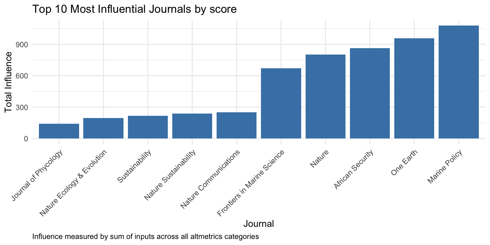
Part 4. Rayyan screening and joint datasets
This part includes the most relevant results from joining bibliometrics data with the metadata included during the Rayyan screening.
Before starting, I will need to organize the country data
#Who is driving research effort
#For the joint sectors set:
# Extract countries from the affiliations
bibmetaSEP_cc <- metaTagExtraction(bibmetaSEP, Field = "AU_CO", sep = ";")
# Separate countries when multiple authors
bibmetaSEP_cc <- bibmetaSEP_cc %>%
separate_rows(AU_CO, sep = ";")
# Remove leading and trailing white spaces
bibmetaSEP_cc$AU_CO <- str_trim(bibmetaSEP_cc$AU_CO)
# Remove empty strings
bibmetaSEP_cc <- bibmetaSEP_cc %>%
filter(AU_CO != "")
#remove countries with longitude >180 to make equal projection-like map without artifacts
world_map <- map_data("world") %>%
filter(! long > 180
)
# Format country names to match regions on the world map
bibmetaSEP_cc$region <- str_to_title(bibmetaSEP_cc$AU_CO)
#need to split region column
region <- str_split_fixed(bibmetaSEP_cc$region, ";", 12)
regiondf <- as.data.frame(region)
#split labels into individual countries
region <- str_split_fixed(bibmetaSEP_cc$region, ";", 12)
#put species into a vector
region.vec <- as.vector(region)
#region.vec
#remove the ""
region.vec <- region.vec[region.vec != ""]
#table(region.vec) #visualise the species frequencies
#convert table to a data frame
region.SEP <- data.frame(table(region.vec),stringsAsFactors = FALSE)
#region.SEP
#rename country variables from region.vec
region.SEP <- rename(region.SEP, region = region.vec)
region.SEP <- rename(region.SEP, n = Freq)
#rename Usa to USA and United Kingdom to UK for consistency
region.SEP$region <- recode(region.SEP$region, 'Usa' = 'USA')
region.SEP$region <- recode(region.SEP$region, 'United Kingdom' = 'UK')
#region.SEP
#For the dataset with sectors as rows
bibmetaEXTRA_cc <- metaTagExtraction(bibmetaEXTRA, Field = "AU_CO", sep = ";")
# Separate countries when multiple authors
bibmetaEXTRA_cc <- bibmetaEXTRA_cc %>%
separate_rows(AU_CO, sep = ";")
# Remove leading and trailing white spaces
bibmetaEXTRA_cc$AU_CO <- str_trim(bibmetaEXTRA_cc$AU_CO)
# Remove empty strings
bibmetaEXTRA_cc <- bibmetaEXTRA_cc %>%
filter(AU_CO != "")
# Format country names to match regions on the world map
bibmetaEXTRA_cc$region <- str_to_title(bibmetaEXTRA_cc$AU_CO)
#need to split region column
region2 <- str_split_fixed(bibmetaEXTRA_cc$region, ";", 12)
regiondf2 <- as.data.frame(region2)
#split labels into individual countries
region2 <- str_split_fixed(bibmetaEXTRA_cc$region, ";", 12)
#put species into a vector
region.vec2 <- as.vector(region2)
#region.vec2 #to check
#remove the ""
region.vec2 <- region.vec2[region.vec2 != ""]
#table(region.vec) #visualise the species frequencies
#convert table to a data frame
region.EXTRA <- data.frame(table(region.vec2),stringsAsFactors = FALSE)
#region.EXTRA #to check
#rename country variables from region.vec
region.EXTRA <- rename(region.EXTRA, region = region.vec2)
region.EXTRA <- rename(region.EXTRA, n = Freq)
#rename Usa to USA and United Kingdom to UK for consistency
region.EXTRA$region <- recode(region.EXTRA$region, 'Usa' = 'USA')
region.EXTRA$region <- recode(region.EXTRA$region, 'United Kingdom' = 'UK')
#region.EXTRA
#research effort per country
#pie chart about total % points of view
# Create a new data frame with regions grouped as "Others" if n < 100
regions_to_keep <- region.SEP %>%
group_by(region) %>%
summarize(total_articles = sum(n)) %>%
filter(total_articles >= 100) %>%
pull(region)
# Convert regions_to_keep to a character vector
regions_to_keep <- as.character(regions_to_keep)
# Create a new data frame with regions grouped as "Others" if n < 20
grouped_dataset <- region.SEP %>%
mutate(region = fct_other(region, keep = regions_to_keep)) %>%
group_by(region) %>%
summarize(n = sum(n))
# Calculate the total number of articles
total_articles <- sum(grouped_dataset$n)
# Calculate the percentage of articles for each region
grouped_dataset$percentage <- grouped_dataset$n / total_articles
# Create the chart
ggplot(grouped_dataset, aes(x = "", y = n, fill = region)) +
geom_bar(stat = "identity", width = 1) +
geom_text(aes(label = percent(percentage)), position = position_stack(vjust = 0.5)) +
coord_polar("y", start = 0) +
labs(title = "Pie Chart of Regions", fill = "Regions") +
theme_minimal() +
theme(axis.text.x = element_blank(), # Remove x-axis labels
axis.ticks.x = element_blank()) # Remove x-axis ticks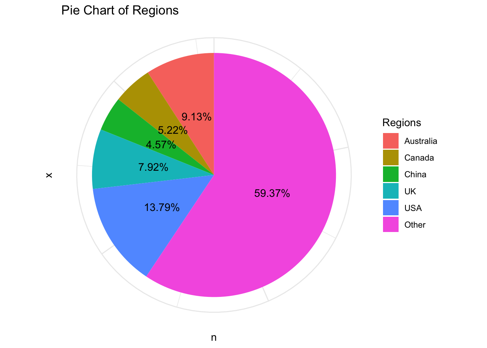
4.1 Shifting perceptions
How perceptions have shifted through years, by sectors and depending on the Tier.
Note: Tier 1 - Studies the Blue Economy as a subject | Tier 2 - Studies about applications of Blue Economy
For this first part, we will use the data frame were sectors are grouped in columns (metaSEP)
#We will see total shifts in point of view in accordance with year (as a percentage of total published data that year), per industry, a combination of both, and shifts in time per country
# Calculate the total percentage for each point of view category
view_counts <- metaSEP %>%
group_by(View) %>%
summarise(count = n()) %>%
mutate(percentage = count / sum(count) * 100)
#pie chart about total % points of view
view_counts2 <- table(metaSEP$View)
ggplot(data.frame(view_counts2), aes(x = "", y = Freq, fill = names(view_counts2))) +
geom_bar(stat = "identity", width = 1) +
coord_polar("y", start = 0) +
labs(title = "Distribution of Points of View") +
theme_void()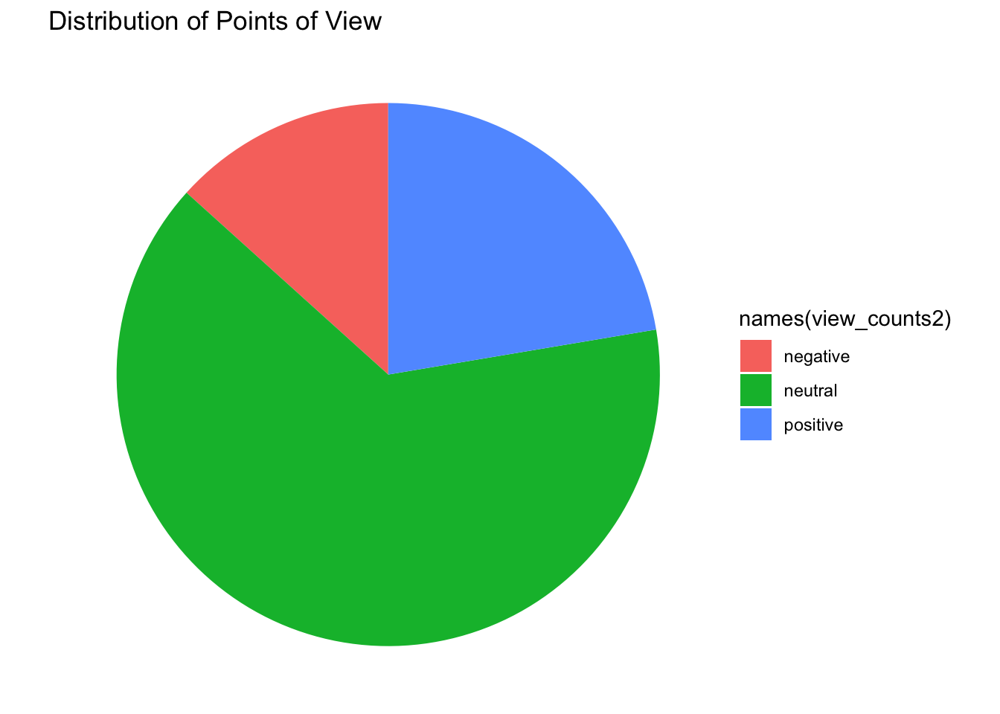
# Calculate the percentage for each point of view category within each year
view_percentagesYR <- metaSEP %>%
group_by(year, View) %>%
summarise(count = n(), .groups = "drop") %>% # Specify .groups = "drop" to reset grouping
group_by(year) %>%
mutate(percentage = count / sum(count) * 100)
# Calculate the percentage for each point of view category within each year
ggplot(view_percentagesYR, aes(x = factor(year), y = percentage, fill = View)) +
geom_bar(stat = "identity", position = "fill") +
labs(x = "Year", y = "Percentage", title = "Shift in Point of View") +
theme(axis.text.x = element_text(angle = 45, hjust = 1),
legend.position = "bottom",
legend.title = element_blank(),
panel.background = element_blank(),
panel.grid.major.x = element_blank(),
panel.grid.minor = element_blank(),
plot.title = element_text(size = 16, face = "bold"),
axis.title = element_text(size = 12),
axis.text = element_text(size = 10),
legend.text = element_text(size = 10),
legend.box.background = element_rect(colour = "black", size = 0.5)) +
scale_fill_brewer(palette = "Set1")Warning: The `size` argument of `element_rect()` is deprecated as of ggplot2 3.4.0.
ℹ Please use the `linewidth` argument instead.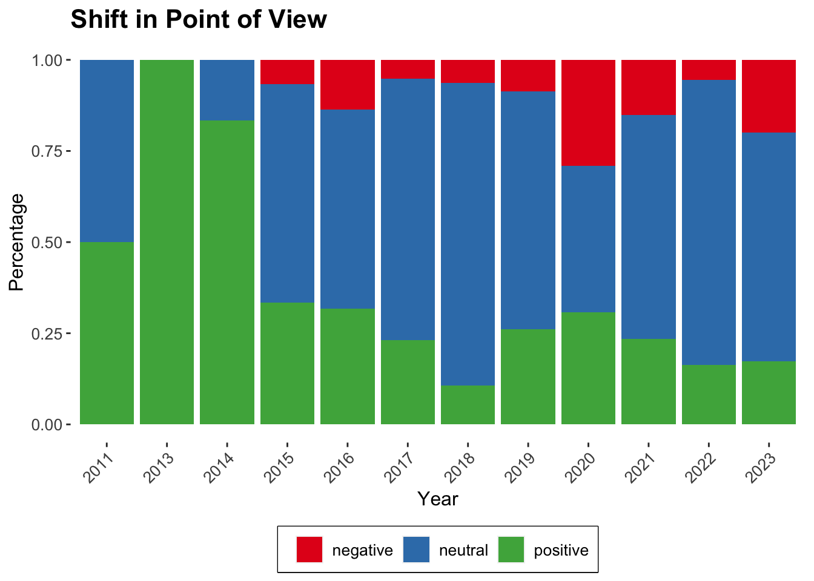
# Now just a chart of total points of view (no percentages)
#first we group the data
view_counts_total_per_year <- metaSEP %>%
group_by(year, View) %>%
summarise(count = n(), .groups = "drop") %>% # Specify .groups = "drop" to reset grouping
ungroup()
# Stacked bar chart for total points of view per year
ggplot(view_counts_total_per_year, aes(x = factor(year), y = count, fill = View)) +
geom_bar(stat = "identity", position = "stack") +
labs(x = "Year", y = "Count", title = "Distribution of Points of View per Year") +
theme_minimal() +
theme(axis.text.x = element_text(angle = 45, hjust = 1),
legend.position = "bottom",
legend.title = element_blank(),
panel.grid.major.x = element_blank(),
panel.grid.minor = element_blank(),
plot.title = element_text(size = 16, face = "bold"),
axis.title = element_text(size = 12),
axis.text = element_text(size = 10),
legend.text = element_text(size = 10),
legend.box.background = element_rect(colour = "black", size = 0.5))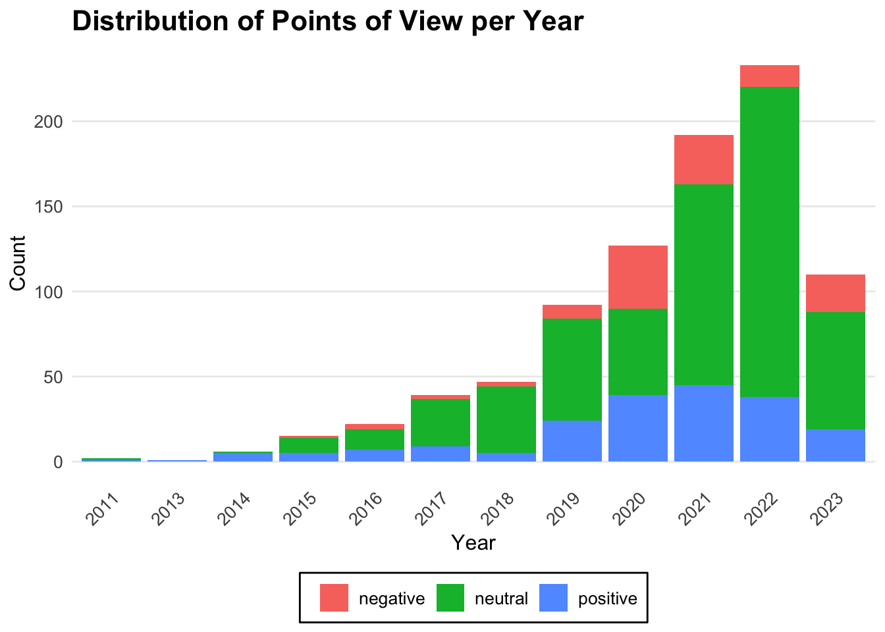
# Scatter plot for total points of view per year
ggplot(view_counts_total_per_year, aes(x = factor(year), y = count, color = View, group = View)) +
geom_point() +
geom_line() +
labs(x = "Year", y = "Count", title = "Distribution of Points of View per Year") +
theme_minimal() +
theme(axis.text.x = element_text(angle = 45, hjust = 1),
legend.position = "bottom",
legend.title = element_blank(),
panel.grid.major.x = element_blank(),
panel.grid.minor = element_blank(),
plot.title = element_text(size = 16, face = "bold"),
axis.title = element_text(size = 12),
axis.text = element_text(size = 10),
legend.text = element_text(size = 10),
legend.box.background = element_rect(colour = "black", size = 0.5)) +
scale_color_brewer(palette = "Set1")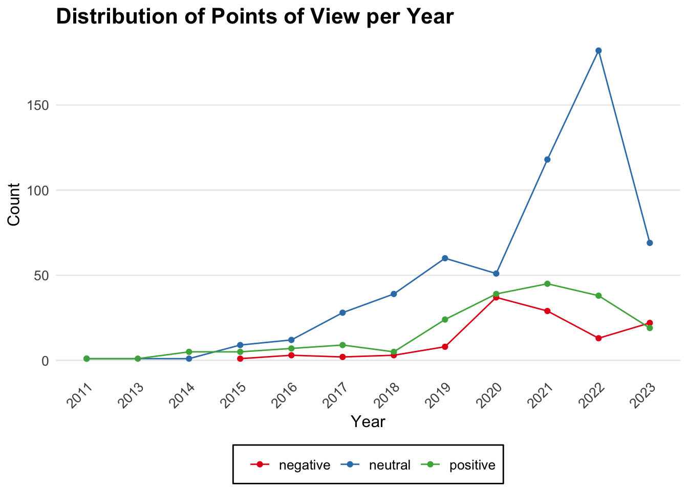
Now per Tier (using metaSEP)
#First a chart to understand how many articles of each we have
# Calculate the total percentage for each Tier category
tier_counts <- metaSEP %>%
group_by(Classification) %>%
summarise(count = n()) %>%
mutate(percentage = count / sum(count) * 100)
#pie chart about total % points of view
tier_counts <- table(metaSEP$Classification)
# Calculate the total quantity for each category
total_counts <- as.data.frame(table(metaSEP$Classification))
# Pie chart with captions
ggplot(data.frame(tier_counts), aes(x = "", y = Freq, fill = names(tier_counts))) +
geom_bar(stat = "identity", width = 1) +
coord_polar("y", start = 0) +
geom_text(data = total_counts, aes(label = Freq), position = position_stack(vjust = 0.5), size = 4) +
labs(title = "Distribution of Tiers") +
theme_void()
#growth in articles per year
# Calculate the number of articles per year per tier
articles_per_year_per_tier <- metaSEP %>%
group_by(Classification, year) %>%
summarize(NumArticles = n())`summarise()` has grouped output by 'Classification'. You can override using the `.groups` argument.# Create the line plot for growth in number of articles per year per tier
ggplot(articles_per_year_per_tier, aes(x = year, y = NumArticles, color = Classification)) +
geom_line() +
geom_point() +
labs(title = "Growth in Number of Articles per Year per Tier",
x = "Year", y = "Number of Articles",
color = "Tier") +
theme_minimal()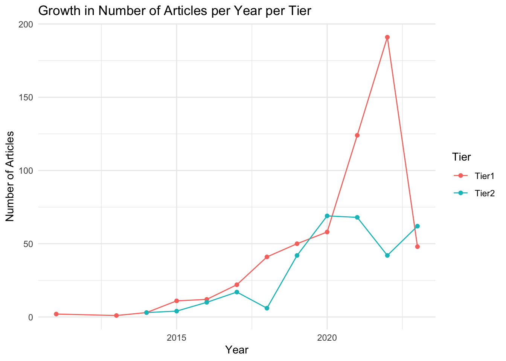
#Now the differences
# Filter for Tier1 and calculate the percentage for each point of view category within each year
view_percentagesYR_tier1 <- metaSEP %>%
filter(Classification == "Tier1") %>%
group_by(year, View) %>%
summarise(count = n(), .groups = "drop") %>% # Specify .groups = "drop" to reset grouping
group_by(year) %>%
mutate(percentage = count / sum(count) * 100) %>%
mutate(Classification = "Tier1")
# Filter for Tier2 and calculate the percentage for each point of view category within each year
view_percentagesYR_tier2 <- metaSEP %>%
filter(Classification == "Tier2") %>%
group_by(year, View) %>%
summarise(count = n(), .groups = "drop") %>% # Specify .groups = "drop" to reset grouping
group_by(year) %>%
mutate(percentage = count / sum(count) * 100) %>%
mutate(Classification = "Tier2")
# Combine the dataframes
combined_data <- bind_rows(view_percentagesYR_tier1, view_percentagesYR_tier2)
# Create the plot
ggplot(combined_data, aes(x = factor(year), y = percentage, fill = View)) +
geom_bar(stat = "identity", position = "fill") +
labs(x = "Year", y = "Percentage",
title = "Shift in Point of View by Classification",
fill = "Point of View",
caption = "Blue Economy Research: Tier 1 | Blue Economy Applications: Tier 2") +
theme(axis.text.x = element_text(angle = 45, hjust = 1),
legend.position = "bottom",
legend.title = element_blank(),
panel.background = element_blank(),
panel.grid.major.x = element_blank(),
panel.grid.minor = element_blank(),
plot.title = element_text(size = 16, face = "bold"),
axis.title = element_text(size = 12),
axis.text = element_text(size = 10),
legend.text = element_text(size = 10),
legend.box.background = element_rect(colour = "black", size = 0.5)) +
scale_fill_brewer(palette = "Set1") +
facet_wrap(~ Classification, ncol = 1)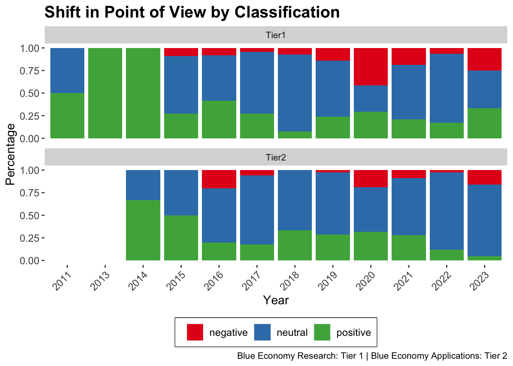
If we want to see perception shifts per sector, we need the other dataframe (metaEXTRA)
# Calculate the percentage for each point of view category within each sector
view_percentagesSEC <- metaEXTRA %>%
group_by(Sector, View) %>%
summarise(count = n()) %>%
group_by(Sector) %>%
mutate(percentage = count / sum(count) * 100) %>%
ungroup()`summarise()` has grouped output by 'Sector'. You can override using the `.groups` argument.# Reorder levels of "Sector" based on increasing negative view percentage
view_percentagesSEC <- view_percentagesSEC %>%
arrange(if_else(View == "negative", percentage, Inf)) %>%
mutate(Sector = fct_inorder(Sector))
# Reorder levels of "Sector" with "Others" last
view_percentagesSEC$Sector <- fct_relevel(view_percentagesSEC$Sector, "Others", after = Inf)
# Create the plot with facets
ggplot(view_percentagesSEC, aes(x = Sector, y = percentage, fill = View)) +
geom_bar(stat = "identity", position = "fill") +
labs(x = "Sector", y = "Percentage", title = "Shift in Point of View by Sector") +
theme_minimal() +
theme(axis.text.x = element_text(angle = 45, hjust = 1),
legend.position = "bottom",
legend.title = element_blank(),
plot.title = element_text(size = 16, face = "bold"),
axis.title = element_text(size = 12),
axis.text = element_text(size = 10),
legend.text = element_text(size = 10),
panel.grid.major.y = element_line(color = "gray90"),
panel.grid.minor = element_blank()) +
scale_fill_brewer(palette = "Set1")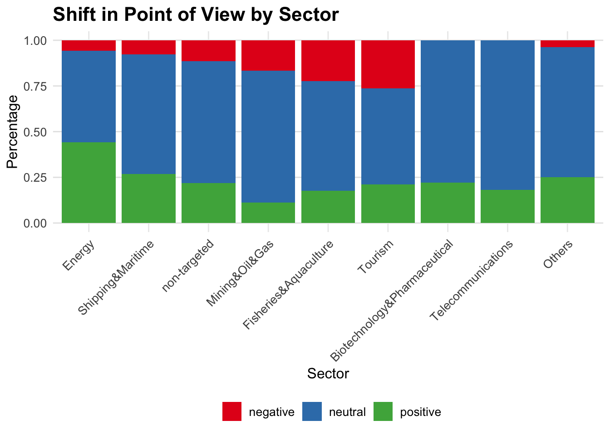
#Another option
view_countsSEC <- metaEXTRA %>%
group_by(Sector, View) %>%
summarise(count = n())`summarise()` has grouped output by 'Sector'. You can override using the `.groups` argument.ggplot(view_countsSEC, aes(x = View, y = count, fill = Sector)) +
geom_bar(stat = "identity") +
labs(x = "View", y = "Count", title = "Point of View by Sector") +
theme_minimal() +
theme(axis.text.x = element_text(angle = 45, hjust = 1),
legend.position = "bottom",
legend.title = element_blank(),
plot.title = element_text(size = 16, face = "bold"),
axis.title = element_text(size = 12),
axis.text = element_text(size = 10),
legend.text = element_text(size = 10),
panel.grid.major.y = element_line(color = "gray90"),
panel.grid.minor = element_blank()) +
scale_fill_brewer(palette = "Set1")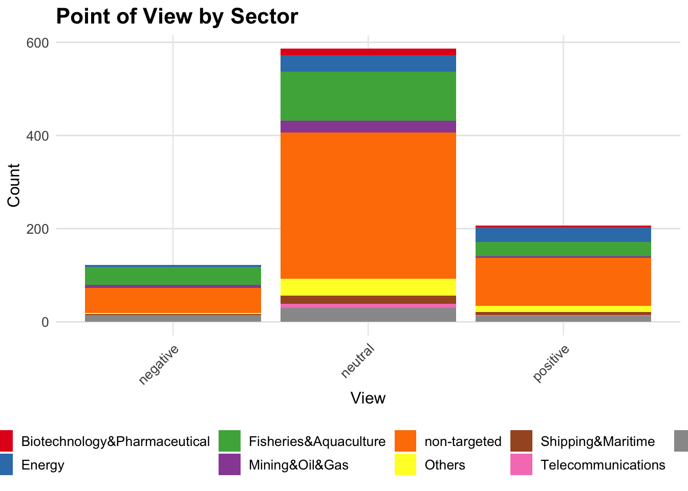
# Calculate the percentage for each point of view category within each sector per year
view_percentagesSEC_YR <- metaEXTRA %>%
group_by(Sector, View, year) %>%
summarise(count = n()) %>%
group_by(Sector, year) %>%
mutate(percentage = count / sum(count) * 100) %>%
ungroup()`summarise()` has grouped output by 'Sector', 'View'. You can override using the `.groups` argument.# Reorder levels of "Sector" with "Others" last
view_percentagesSEC_YR$Sector <- fct_relevel(view_percentagesSEC_YR$Sector, "Others", after = Inf)
# Create the plot
ggplot(view_percentagesSEC_YR, aes(x = year, y = percentage, fill = View)) +
geom_area(position = "stack") +
facet_wrap(~ Sector, ncol = 2, scales = "free_y") +
labs(x = "Year", y = "Percentage", title = "Shift in Point of View by Sector and Year") +
theme_minimal() +
theme(axis.text.x = element_text(angle = 45, hjust = 1),
legend.position = "bottom",
legend.title = element_blank(),
plot.title = element_text(size = 16, face = "bold"),
axis.title = element_text(size = 12),
axis.text = element_text(size = 10),
legend.text = element_text(size = 10),
panel.grid.major.y = element_line(color = "gray90"),
panel.grid.minor = element_blank()) +
scale_fill_brewer(palette = "Set1")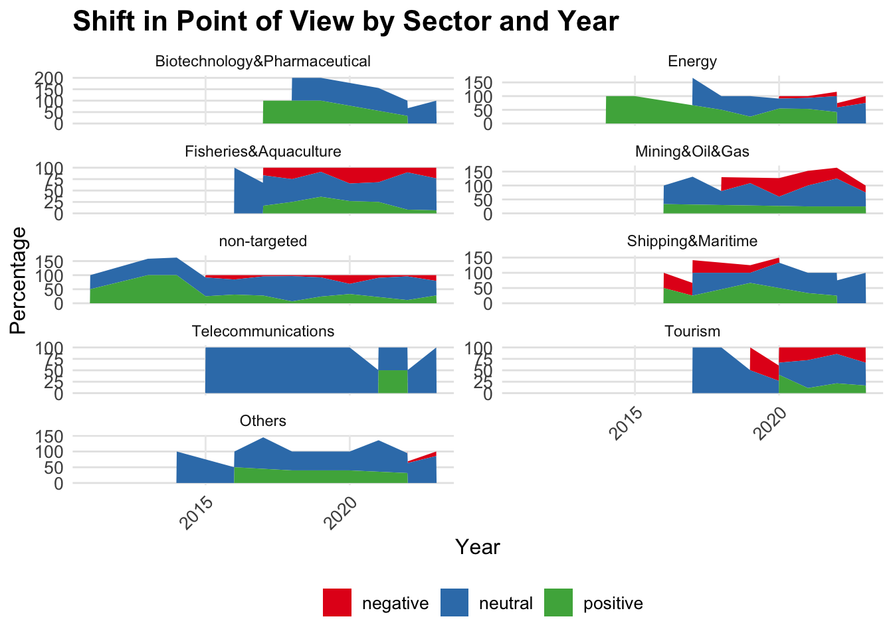
#scope into negativity
# Filter the data for "Negativity" view only
negativity_data <- metaEXTRA %>%
filter(View == "negative")
# Calculate the count of negativity views for each sector per year
negativity_counts_SEC_YR <- negativity_data %>%
group_by(Sector, year) %>%
summarise(negativity_count = n())`summarise()` has grouped output by 'Sector'. You can override using the `.groups` argument.# Create the scatter plot with connecting lines
ggplot(negativity_counts_SEC_YR, aes(x = year, y = negativity_count, group = Sector, color = Sector)) +
geom_point(size = 3) +
geom_line() +
labs(x = "Year", y = "Negativity View Count", title = "Number of Negativity Views per Sector and Year") +
theme_minimal() +
theme(axis.text.x = element_text(angle = 45, hjust = 1),
legend.position = "bottom",
legend.title = element_blank(),
plot.title = element_text(size = 16, face = "bold"),
axis.title = element_text(size = 12),
axis.text = element_text(size = 10),
legend.text = element_text(size = 10),
panel.grid.major.y = element_line(color = "gray90"),
panel.grid.minor = element_blank())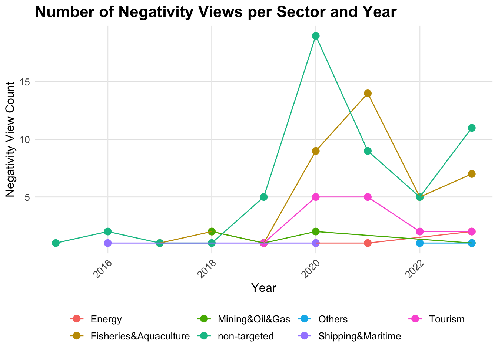
#only negative data
# Filter the data to include only "negative" views
negative_dataPER <- view_percentagesSEC_YR %>%
filter(View == "negative")
# Create the scatter plot for negative field percentages per year for each sector
ggplot(negative_dataPER, aes(x = year, y = percentage, color = Sector, group = Sector)) +
geom_point() +
geom_line() + # Add this line to connect the dots
labs(x = "Year", y = "Percentage", title = "Negative Field Percentages per Year for Each Sector") +
theme_minimal() +
theme(axis.text.x = element_text(angle = 45, hjust = 1),
legend.position = "bottom",
legend.title = element_blank(),
plot.title = element_text(size = 16, face = "bold"),
axis.title = element_text(size = 12),
axis.text = element_text(size = 10),
legend.text = element_text(size = 10),
panel.grid.major.y = element_line(color = "gray90"),
panel.grid.minor = element_blank()) +
scale_color_brewer(palette = "Set1")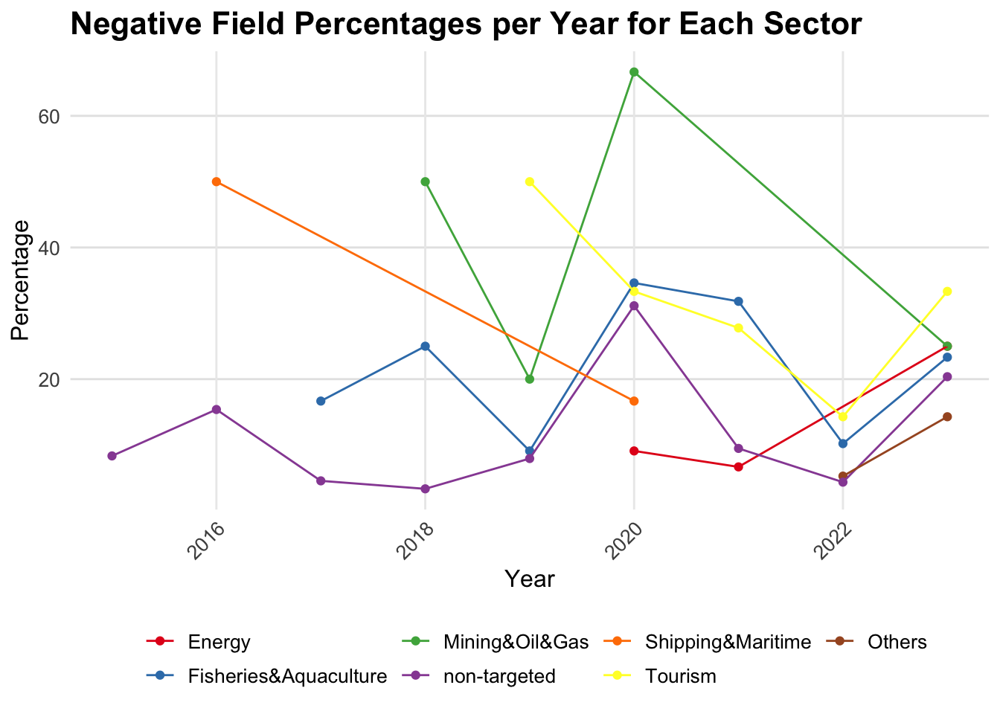
If we want to see some altimetrics with this, we will join the merged_table with bibmetaEXTRA and plot
#First we will merge the altimetrics table (merged_table) with bibmetaEXTRA
# Rename the "doi" column to "DI" in the merged_table
merged_table2 <- merged_table %>%
rename(DI = doi)
# Now, merge the two data frames by "DI"
alltogether_EXTRA <- merge(merged_table2, bibmetaEXTRA, by = "DI")
#Now lets see point of view trend by media type
# Melt the data frame to long format for easier plotting
melted_dataVIEWS <- alltogether_EXTRA %>%
select(DI, View, Policies, Twitter, Facebook, Blogs, News, Wikipedia) %>%
pivot_longer(cols = c(Policies, Twitter, Facebook, Blogs, News, Wikipedia),
names_to = "Media", values_to = "Count")
# Plot the trend of points of view by media type
ggplot(data = melted_dataVIEWS, aes(x = Media, y = Count, fill = View, group = View)) +
geom_col(position = "dodge") +
labs(x = "Media Type", y = "Count", title = "Points of View Trend by Media Type",
fill = "View") +
theme_minimal() +
theme(axis.text.x = element_text(angle = 45, hjust = 1))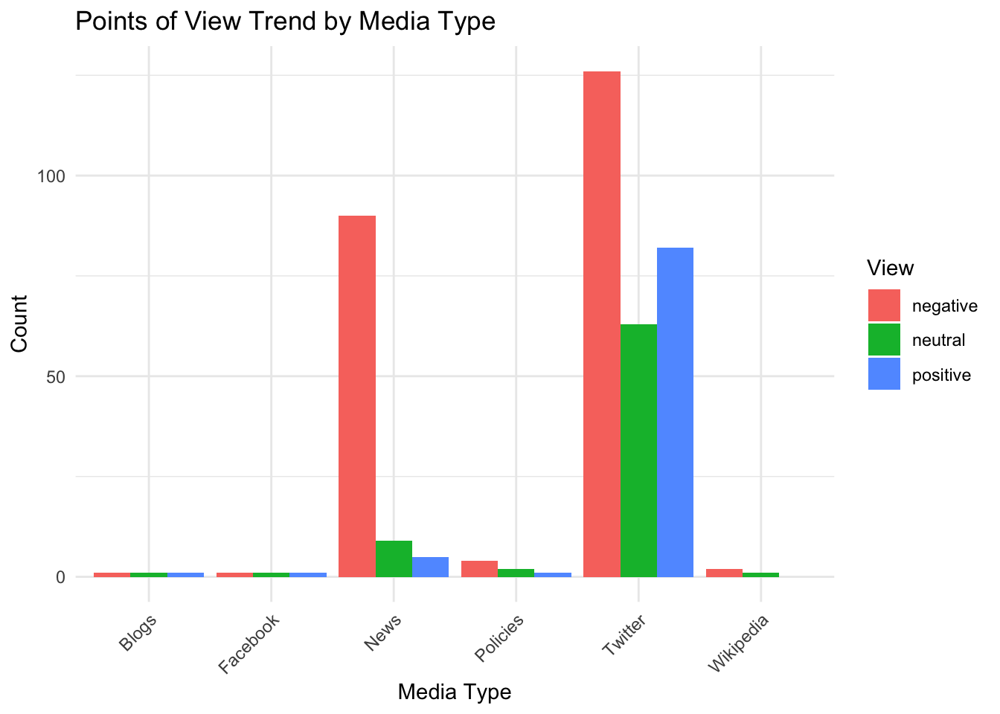
Shifting trends in top countries
# Group by Country and Sector, and count the number of articles in each sector for each country
view_counts_by_country <- bibmetaEXTRA_cc %>%
group_by(AU_CO, View) %>%
summarise(article_count = n()) %>%
ungroup()`summarise()` has grouped output by 'AU_CO'. You can override using the `.groups` argument.# Get the top countries based on the total number of articles published
top_countriesVIEWS <- view_counts_by_country %>%
group_by(AU_CO) %>%
summarise(total_articles = sum(article_count)) %>%
top_n(10) %>%
pull(AU_CO)Selecting by total_articles# Filter the data to keep only the top countries
view_counts_top_countries <- view_counts_by_country %>%
filter(AU_CO %in% top_countriesVIEWS)
# Summarize the count of articles in each sector for each country
view_counts_summarized.CC <- view_counts_top_countries %>%
group_by(AU_CO, View) %>%
summarise(total_articles = sum(article_count)) %>%
ungroup()`summarise()` has grouped output by 'AU_CO'. You can override using the `.groups` argument.# Sort the data by country and total_articles in descending order
view_counts_summarized.CC <- view_counts_summarized.CC %>%
arrange(desc(total_articles))
# Create the bar plot
ggplot(view_counts_summarized.CC, aes(x = reorder(AU_CO, total_articles), y = total_articles, fill = View)) +
geom_bar(stat = "identity") +
labs(x = "Country", y = "Total Articles", title = "Views Published by Top Countries",
fill = "View") +
theme_minimal() +
theme(axis.text.x = element_text(angle = 45, hjust = 1),
legend.position = "right",
plot.title = element_text(size = 16, face = "bold"),
axis.title = element_text(size = 12),
axis.text = element_text(size = 10),
axis.line.x = element_line(color = "black"),
panel.grid.major.y = element_line(color = "gray90"),
panel.grid.minor = element_blank()) +
scale_fill_brewer(palette = "Set1")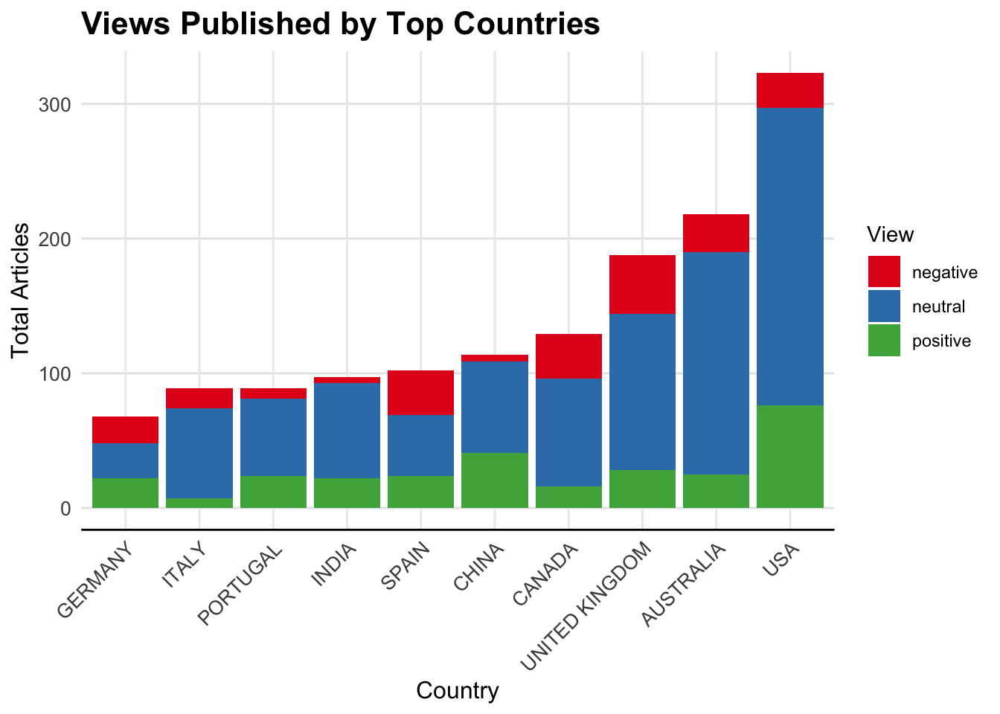
#now as a percentage
# Calculate the total articles for each country
total_articles_by_country <- view_counts_summarized.CC %>%
group_by(AU_CO) %>%
summarise(total_articles = sum(total_articles)) %>%
ungroup()
# Join the total_articles_by_country data to view_counts_summarized
view_counts_summarized.CC <- view_counts_summarized.CC %>%
left_join(total_articles_by_country, by = "AU_CO")
# Calculate the percentage of total articles for each country and view combination
view_counts_summarized.CC <- view_counts_summarized.CC %>%
mutate(percentage_total_articles = (total_articles.x / total_articles.y) * 100) %>%
select(-total_articles.y)
# Create the bar plot with percentage instead of the count
ggplot(view_counts_summarized.CC, aes(x = reorder(AU_CO, -percentage_total_articles), y = percentage_total_articles, fill = View)) +
geom_bar(stat = "identity") +
labs(x = "Country", y = "Percentage of Total Articles", title = "Percentage of Articles with Negative Views by Country",
fill = "View") +
theme_minimal() +
theme(axis.text.x = element_text(angle = 45, hjust = 1),
legend.position = "right",
plot.title = element_text(size = 16, face = "bold"),
axis.title = element_text(size = 12),
axis.text = element_text(size = 10),
axis.line.x = element_line(color = "black"),
panel.grid.major.y = element_line(color = "gray90"),
panel.grid.minor = element_blank()) +
scale_fill_brewer(palette = "Set1")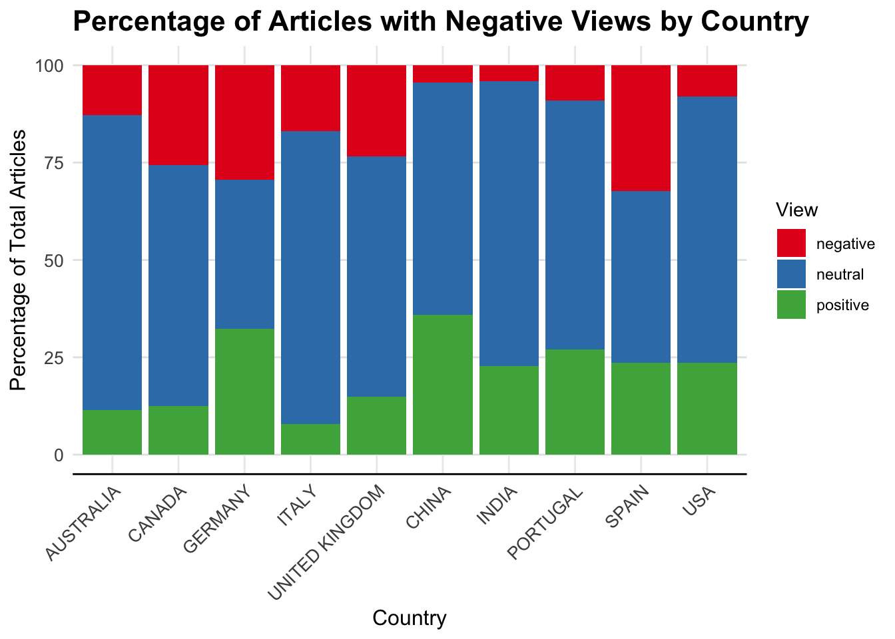
#pie chart of negative contributions
# Filter the data to include only rows with negative views
negative_views_data <- view_counts_summarized.CC %>%
filter(View == "negative")
# Create the pie chart
ggplot(negative_views_data, aes(x = "", y = percentage_total_articles, fill = AU_CO)) +
geom_bar(stat = "identity", width = 1) +
coord_polar("y", start = 0) +
labs(title = "Percentage of Articles with Negative Views by Country") +
theme_void() +
theme(legend.position = "bottom") 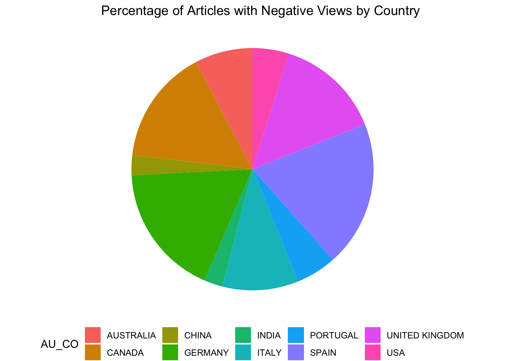
4.2 Sector effort and influence
Here we will use the dataset with sectors in extra rows (metaEXTRA).
First we want to see the total effort
#Percentages of articles per sector (without considering point of view)
# Calculate the percentage for each sector
sector_counts <- metaEXTRA %>%
group_by(Sector) %>%
summarise(count = n()) %>%
mutate(percentage = count / sum(count) * 100)
#pie chart about total % points of view
sector_counts <- table(metaEXTRA$Sector)
ggplot(data.frame(sector_counts), aes(x = "", y = Freq, fill = names(sector_counts))) +
geom_bar(stat = "identity", width = 1) +
coord_polar("y", start = 0) +
labs(title = "Distribution of Sector Target") +
theme_void()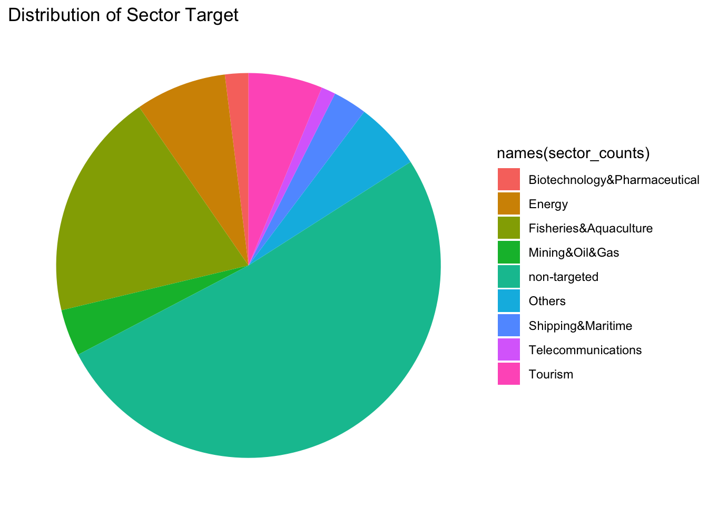
#I want to remove the non-targeted articles:
# Calculate the percentage for each sector
sector_counts <- metaEXTRA %>%
group_by(Sector) %>%
summarise(count = n()) %>%
mutate(percentage = count / sum(count) * 100)
# Filter out the 'non-targeted' sector
sector_counts <- sector_counts %>%
filter(Sector != "non-targeted")
# Create the pie chart
ggplot(data = sector_counts, aes(x = "", y = count, fill = Sector)) +
geom_bar(stat = "identity", width = 1) +
coord_polar("y", start = 0) +
labs(title = "Distribution of Sector Target (non-targeted excluded)") +
theme_void()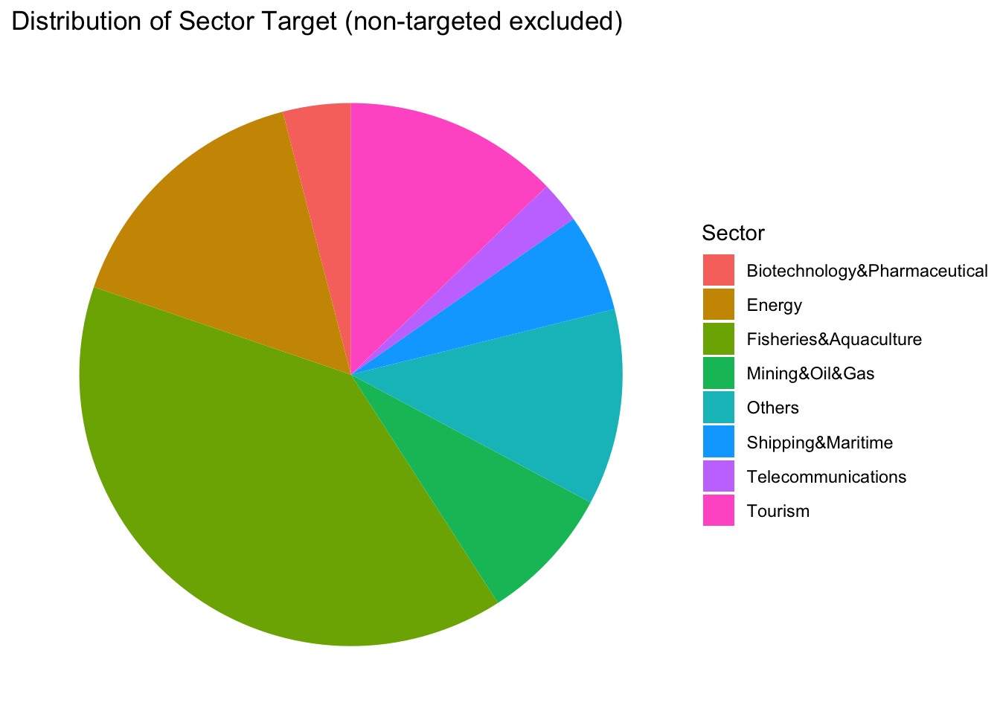
#And make one of all these vs non targeted, including % numbers:
# Step 1: Update the 'Sector' column
metaSEP2 <- metaSEP %>%
mutate(Sector = ifelse(Sector == "non-targeted", "non-targeted", "sector-related"))
# Step 2: Calculate the percentage for "non-targeted" and "Sector-related" categories
sector_counts2 <- metaSEP2 %>%
group_by(Sector) %>%
summarise(count = n()) %>%
mutate(percentage = count / sum(count) * 100)
# Step 3: Create the bar plot
ggplot(sector_counts2, aes(x = Sector, y = count, fill = Sector)) +
geom_bar(stat = "identity") +
geom_text(aes(label = paste0(round(percentage, 2), "%")), position = position_stack(vjust = 0.5)) +
labs(x = "", y = "Count", title = "Comparison of non-targeted and Sector-related") +
theme_minimal() +
theme(axis.text.x = element_text(angle = 45, hjust = 1),
legend.position = "none",
plot.title = element_text(size = 16, face = "bold"),
axis.title = element_text(size = 12),
axis.text = element_text(size = 10),
axis.text.y = element_text(margin = margin(r = 10)),
axis.line.x = element_line(color = "black"),
panel.grid.major.y = element_line(color = "gray90"),
panel.grid.minor = element_blank()) +
scale_fill_brewer(palette = "Set1")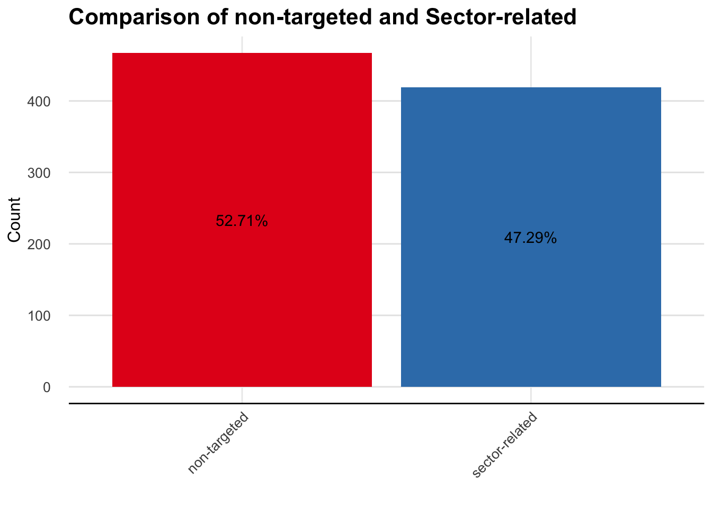
#pie chart view
ggplot(sector_counts2, aes(x = "", y = count, fill = Sector)) +
geom_bar(stat = "identity", width = 1) +
coord_polar("y", start = 0) + # Convert the bar chart to a pie chart
geom_text(aes(label = paste0(round(percentage, 2), "%")),
position = position_stack(vjust = 0.5),
size = 4, # Adjust the font size of the percentage labels
vjust = -0.3, # Adjust the vertical position of the labels
fontface = "bold") + # Set the font face to bold
labs(x = "", y = "Count", title = "Comparison of non-targeted and Sector-related") +
theme_minimal() +
theme(axis.text.x = element_blank(), # Remove x-axis labels (empty string)
axis.text.y = element_text(margin = margin(r = 10)),
axis.title = element_text(size = 12),
axis.text = element_text(size = 10),
axis.line.x = element_line(color = "black"),
plot.title = element_text(size = 16, face = "bold"),
legend.position = "bottom", # Move the legend to the bottom
legend.title = element_blank(),
legend.text = element_text(size = 10),
panel.grid.major.y = element_line(color = "gray90"),
panel.grid.minor = element_blank()) +
scale_fill_brewer(palette = "Set1")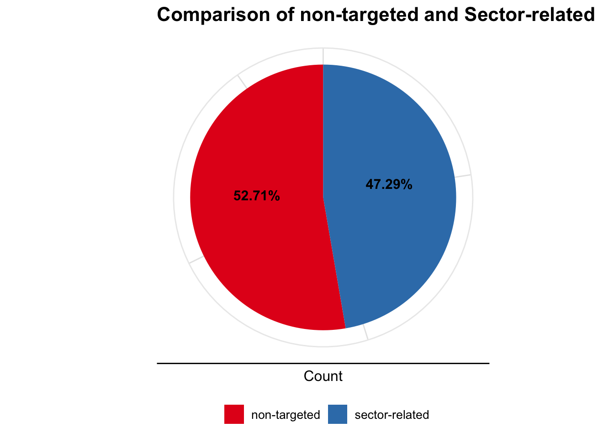
#Chart trying to summarize
# Calculate the total count
total_count <- sum(view_countsSEC$count)
# Create the pie chart with total count
ggplot(view_countsSEC, aes(x = "", y = count, fill = Sector)) +
geom_bar(stat = "identity", width = 1) +
coord_polar("y", start = 0) +
labs(x = NULL, y = NULL, title = "Total Counts per Sector") +
theme_minimal() +
theme(
axis.line = element_blank(),
axis.text = element_blank(),
axis.ticks = element_blank(),
plot.title = element_text(size = 16, face = "bold"),
legend.position = "bottom",
legend.title = element_blank(),
panel.grid = element_blank(),
panel.background = element_blank()
) +
scale_fill_brewer(palette = "Set1") +
geom_text(aes(label = count), position = position_stack(vjust = 0.5), size = 1.5) +
annotate(
"text",
x = 0, y = 0,
label = paste("Total Count:", total_count),
size = 2,
color = "black"
)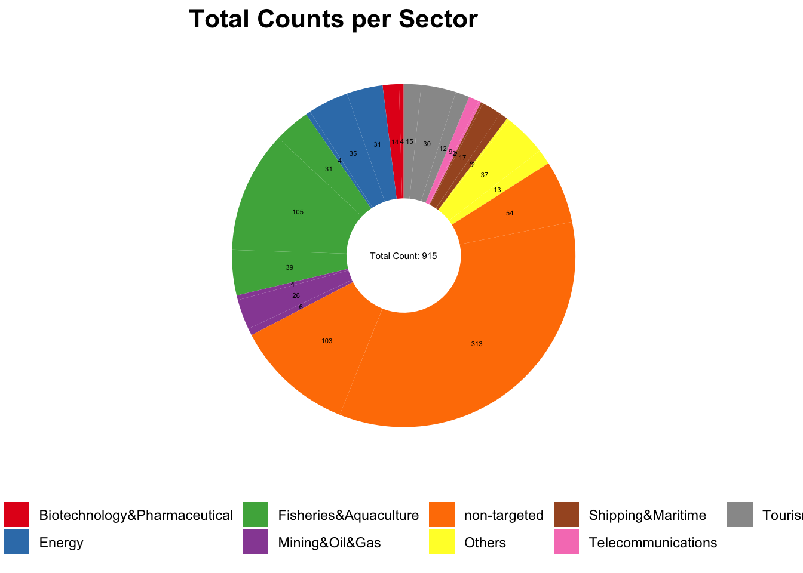
#Sector effort evolution through years
sector_dataYR <- metaEXTRA %>%
group_by(Sector, year) %>%
summarise(count = n()) %>%
mutate(count) %>%
ungroup()`summarise()` has grouped output by 'Sector'. You can override using the `.groups` argument.# Reorder levels of "Sector" with "Others" last
sector_dataYR$Sector <- fct_relevel(sector_dataYR$Sector, "Others", after = Inf)
# Create the scatter plot for negative field percentages per year for each sector
ggplot(sector_dataYR, aes(x = year, y = count, color = Sector, group = Sector)) +
geom_point() +
geom_line() + # Add this line to connect the dots
labs(x = "Year", y = "Count", title = "Annual Research effort per Sector") +
theme_minimal() +
theme(axis.text.x = element_text(angle = 45, hjust = 1),
legend.position = "bottom",
legend.title = element_blank(),
plot.title = element_text(size = 16, face = "bold"),
axis.title = element_text(size = 12),
axis.text = element_text(size = 10),
legend.text = element_text(size = 10),
panel.grid.major.y = element_line(color = "gray90"),
panel.grid.minor = element_blank()) +
scale_color_brewer(palette = "Set1")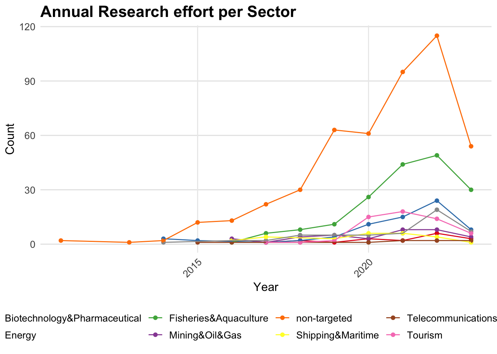
Research effort by country/sector
#research effort by country/sector
# Group by Country and Sector, and count the number of articles in each sector for each country
sector_counts_by_country <- bibmetaEXTRA_cc %>%
group_by(AU_CO, Sector) %>%
summarise(article_count = n()) %>%
ungroup()`summarise()` has grouped output by 'AU_CO'. You can override using the `.groups` argument.# Get the top countries based on the total number of articles published
top_countries <- sector_counts_by_country %>%
group_by(AU_CO) %>%
summarise(total_articles = sum(article_count)) %>%
top_n(10) %>%
pull(AU_CO)Selecting by total_articles# Filter the data to keep only the top countries
sector_counts_top_countries <- sector_counts_by_country %>%
filter(AU_CO %in% top_countries)
# Summarize the count of articles in each sector for each country
sector_counts_summarized <- sector_counts_top_countries %>%
group_by(AU_CO, Sector) %>%
summarise(total_articles = sum(article_count)) %>%
ungroup()`summarise()` has grouped output by 'AU_CO'. You can override using the `.groups` argument.# Sort the data by country and total_articles in descending order
sector_counts_summarized <- sector_counts_summarized %>%
arrange(desc(total_articles))
# Create the bar plot
ggplot(sector_counts_summarized, aes(x = reorder(AU_CO, total_articles), y = total_articles, fill = Sector)) +
geom_bar(stat = "identity") +
labs(x = "Country", y = "Total Articles", title = "Top Sectors Published by Top Countries",
fill = "Sector") +
theme_minimal() +
theme(axis.text.x = element_text(angle = 45, hjust = 1),
legend.position = "right",
plot.title = element_text(size = 16, face = "bold"),
axis.title = element_text(size = 12),
axis.text = element_text(size = 10),
axis.line.x = element_line(color = "black"),
panel.grid.major.y = element_line(color = "gray90"),
panel.grid.minor = element_blank()) +
scale_fill_brewer(palette = "Set1")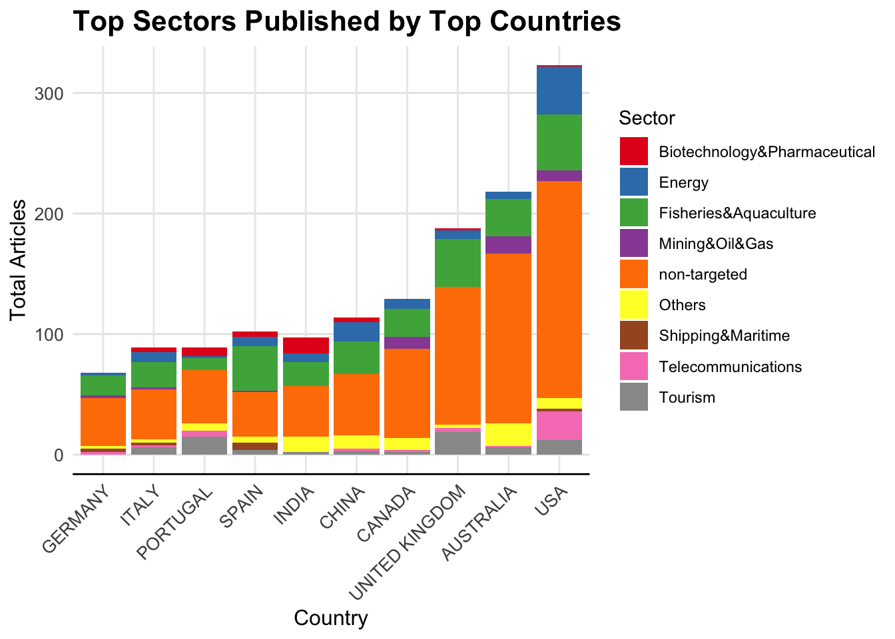
Industry clusters for the top 10 publishing countries
# Get the top countries based on the total number of articles published
top_countries <- sector_counts_by_country %>%
group_by(AU_CO) %>%
summarise(total_articles = sum(article_count)) %>%
top_n(10) %>%
pull(AU_CO)Selecting by total_articles# Filter the data to keep only the top countries
sector_counts_top_countries <- sector_counts_by_country %>%
filter(AU_CO %in% top_countries)
# Create a cross-tabulation of sectors by countries
sector_counts_matrix <- sector_counts_top_countries %>%
pivot_wider(names_from = Sector, values_from = article_count, values_fill = 0)
#str(sector_counts_matrix)
# Calculate the distance between countries based on sectors (Euclidean distance)
distance_matrix <- as.matrix(dist(t(sector_counts_matrix[,-1])))
# Perform hierarchical clustering on the distance matrix using the dendextend package
dend <- as.dendrogram(hclust(as.dist(distance_matrix)))
# Reorder the rows of the data based on the clustering
reordered_matrix <- sector_counts_matrix
# Extract the row names (countries) and convert them to a factor
reordered_countries <- factor(rownames(reordered_matrix), levels = rownames(reordered_matrix))
# Create the cluster map
ggplot(data = gather(reordered_matrix, Sector, Count, -AU_CO)) +
aes(x = AU_CO, y = Sector) +
geom_tile(aes(fill = Count), color = "white") +
scale_fill_viridis_c(option = "magma", direction = -1) + # Change the color palette if desired
labs(x = "Country", y = "Sector", title = "Cluster Map of Sectors Focus by Top Publishing Countries") +
theme_minimal() +
theme(axis.text.x = element_text(angle = 45, hjust = 1),
axis.text.y = element_text(hjust = 0.5),
legend.position = "right",
plot.title = element_text(size = 16, face = "bold"),
axis.title = element_text(size = 12),
axis.text = element_text(size = 10),
axis.line.x = element_line(color = "black"),
panel.grid.major = element_blank(),
panel.grid.minor = element_blank())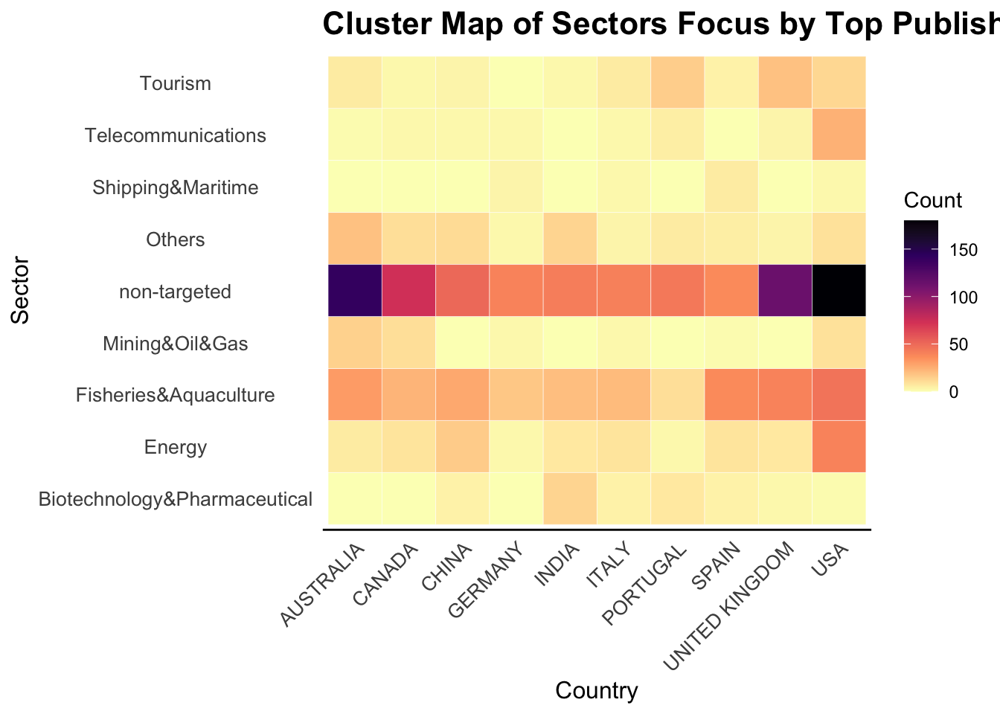
ggsave(here("Plots/clustermap.jpg"), width = 20, height = 20, units = "cm") #save the map on the plot folderIf we want to see some altimetrics with this, we will use the joint set (alltogether_EXTRA)
#Top publishing sectors per media type (which sectors have most attention)
# Melt the data frame to long format for easier plotting
melted_dataSECTORS <- alltogether_EXTRA %>%
select(DI, Sector, Policies, Twitter, Facebook, Blogs, News, Wikipedia) %>%
pivot_longer(cols = c(Policies, Twitter, Facebook, Blogs, News, Wikipedia),
names_to = "Media", values_to = "Count")
# Plot the trend of points of view by media type
ggplot(data = melted_dataSECTORS, aes(x = Media, y = Count, fill = Sector, group = Sector)) +
geom_col(position = "dodge") +
labs(x = "Sector", y = "Count", title = "Sector Trend by Media Type",
fill = "Sector") +
theme_minimal() +
theme(axis.text.x = element_text(angle = 45, hjust = 1))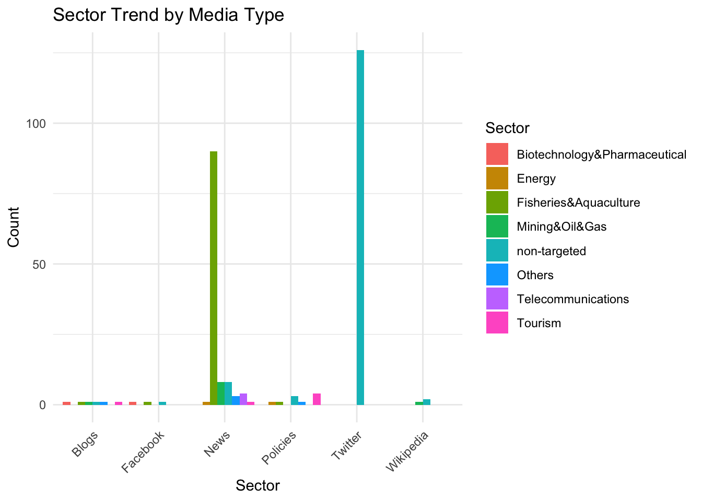
# Filter out the 'non-targeted' sector
melted_dataSECTORSNF <- melted_dataSECTORS %>%
filter(Sector != "non-targeted")
# Plot the trend of points of view by media type
ggplot(data = melted_dataSECTORSNF, aes(x = Media, y = Count, fill = Sector, group = Sector)) +
geom_col(position = "dodge") +
labs(x = "Media", y = "Count", title = "Sector Trend by Media Type (without non-targeted)",
fill = "Sector") +
theme_minimal() +
theme(axis.text.x = element_text(angle = 45, hjust = 1))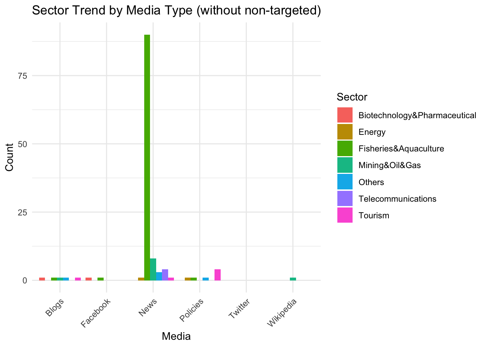
Part 5. Statistical tests
Some quick statistics to ensure observations are significant
#Linear regression to determine linear behavior of publications per year growth trend
lm_mode_growth <- lm(count ~ year, data = view_counts_total_per_year)
summary(lm_mode_growth) # Obtain the summary statistics
Call:
lm(formula = count ~ year, data = view_counts_total_per_year)
Residuals:
Min 1Q Median 3Q Max
-39.530 -15.069 -3.187 7.478 129.638
Coefficients:
Estimate Std. Error t value Pr(>|t|)
(Intercept) -12420.362 3427.061 -3.624 0.00106 **
year 6.169 1.698 3.632 0.00104 **
---
Signif. codes: 0 '***' 0.001 '**' 0.01 '*' 0.05 '.' 0.1 ' ' 1
Residual standard error: 32.31 on 30 degrees of freedom
Multiple R-squared: 0.3055, Adjusted R-squared: 0.2823
F-statistic: 13.19 on 1 and 30 DF, p-value: 0.001037#Linear regression to determine linear behavior of altimetrics per year growth trend
totalALT_per_year$count <- rowSums(totalALT_per_year[, c("Policies", "Twitter", "Facebook", "Blogs", "News", "Wikipedia")]) #create a column that sums all types
lm_mode_growth_Alt <- lm(count ~ year, data = totalALT_per_year)
summary(lm_mode_growth_Alt) # Obtain the summary statistics
Call:
lm(formula = count ~ year, data = totalALT_per_year)
Residuals:
1 2 3 4 5 6
-30.190 -37.248 7.695 88.638 99.581 -128.476
Coefficients:
Estimate Std. Error t value Pr(>|t|)
(Intercept) -46496.12 46224.43 -1.006 0.371
year 23.06 22.88 1.008 0.371
Residual standard error: 95.7 on 4 degrees of freedom
Multiple R-squared: 0.2025, Adjusted R-squared: 0.00314
F-statistic: 1.016 on 1 and 4 DF, p-value: 0.3705